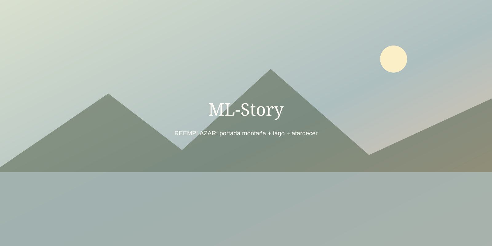
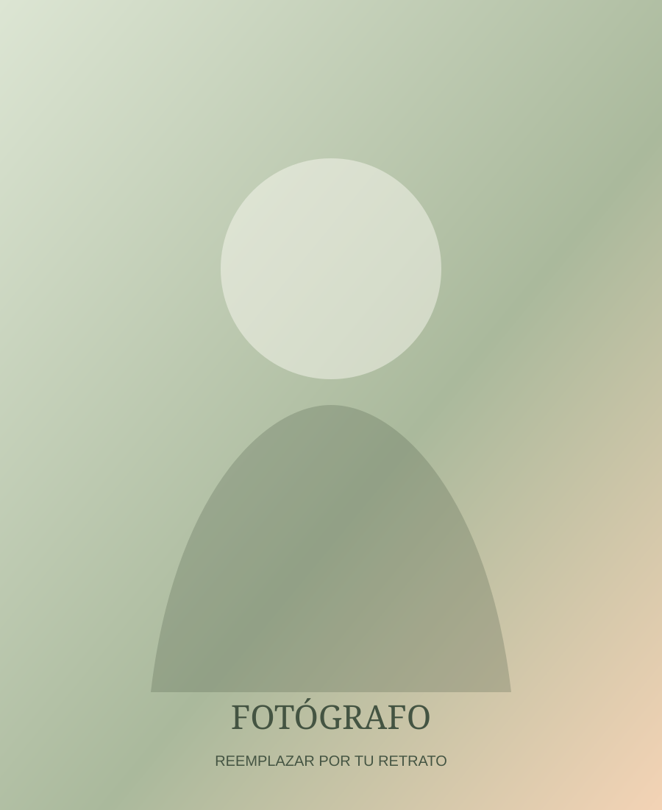

FOTO 360°
Panorama
Reemplazá el panorama ficticio por una imagen equirectangular 2:1. El README explica cómo activar un visor WebGL.
FOTOGRAFÍA · HISTORIAS · VIDA
Montañas, lagos, personas y atardeceres convertidos en historias visuales.
Explorar galeríaExplorar 360° / 3D
FOTOGRAFÍAS
Las tarjetas se generan automáticamente desde js/content.js.
MÁS ALLÁ DE LA IMAGEN
Series fotográficas con una narrativa común.
EL PROCESO
Arrastrá sobre la imagen para comparar el original y la edición final.
EXPERIENCIAS INMERSIVAS
El proyecto deja preparados los lugares para fotografía 360°, video 360° y modelos 3D.
Reemplazá el panorama ficticio por una imagen equirectangular 2:1. El README explica cómo activar un visor WebGL.
Carpeta preparada para tu MP4 360°. Para producción conviene hosting de video especializado.
Carpeta preparada para archivos GLB/GLTF y posterior integración con model-viewer.
HISTORIAS EN MOVIMIENTO
Videos normales, separados de las experiencias 360°.

MLACERCA DE MÍ
Soy la fotógrafa detrás de ML-Story. Me interesa capturar momentos auténticos y transformar la luz, los paisajes y las personas en pequeñas historias visuales.
Mi fotografía busca un equilibrio entre naturaleza, emoción y sencillez. Montañas, lagos, retratos y atardeceres forman parte de una misma idea: conservar esos instantes que muchas veces duran apenas unos segundos.
Para personalizar esta sección, reemplazá assets/photos/about/photographer.svg por tu retrato y editá este texto en index.html.
HABLEMOS
Contacto directo por WhatsApp o email.
HISTORIA